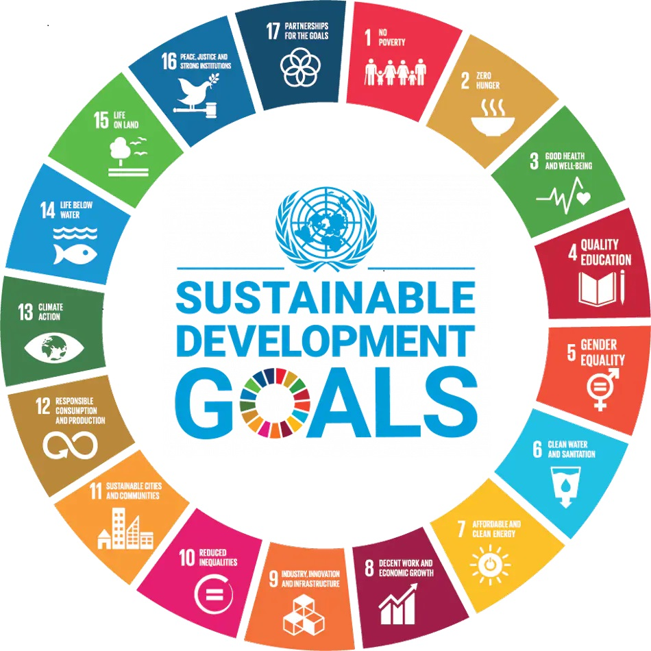

L'obbiettivo di sviluppo sostenibile 4 riguarda l'istruzione di qualità ed è tra i 17 obbiettivi di sviluppo sostenibile.
"Garantire un'istruzione di qualità inclusiva ed equa e promuovere opportunità di apprendimento permanente per tutti".

L'educazione libera l'intelletto, sblocca l'immaginazione ed è fondamentale per il rispetto di sé. È la chiave della prosperità e apre un mondo di opportunità, consentendo a ciascuno di noi di contribuire a una società progressista e sana. L'apprendimento avvantaggia ogni essere umano e dovrebbe essere disponibile per tutti.
Sito web realizzato da Cantoni Riccardo 3F, l'argomento riguarda i 17 obbiettivi dello sviluppo sostenibile, nel mio caso il quarto obbiettivo "Quality Education" ovvero il miglioramento della qualità dell'istruzione composto da diversi target da compiere per raggiungere quest'ultimo obbiettivo.